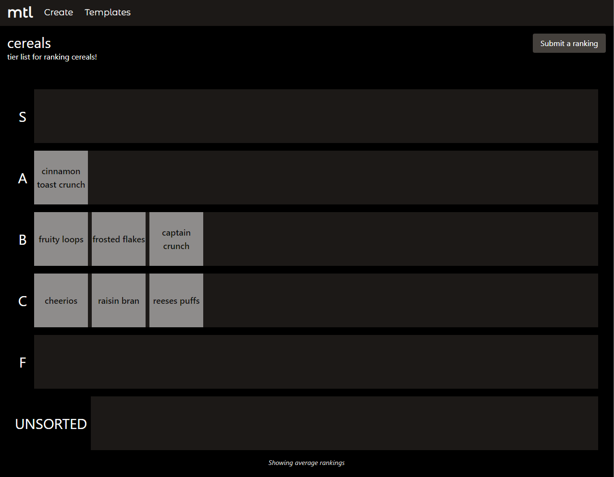
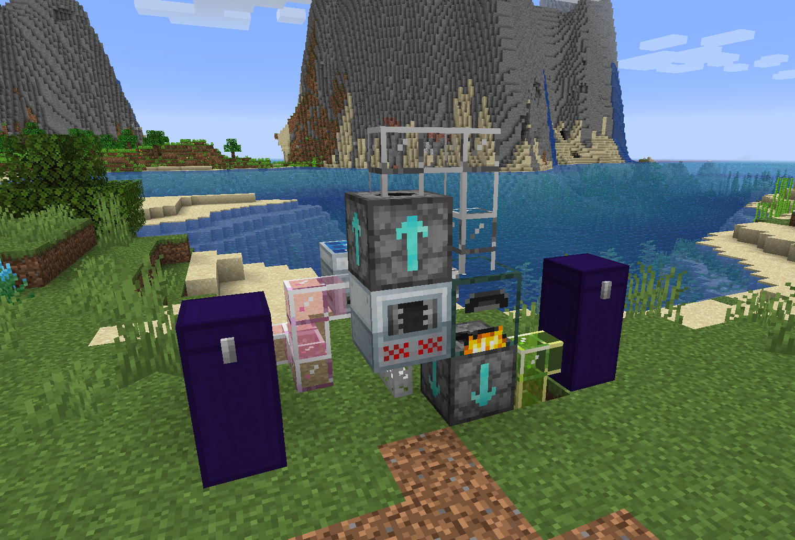

Kavin Phan
About Me
I am a full-time software engineer at Grayscale and a part-time student at the Georgia Institute of Technology.
I have previously interned at Tesla, the Georgia Tech Research Institute, and NCR.
Projects
Ouroboros
Self-describing health dashboard that is deployed on a Kubernetes cluster using multiple compute instances provisioned via Terraform and Ansible spread across different providers (DigitalOcean, Hetzner, and AWS).
Tier lists with democracy. Developed using React and GoLang.
Service skeleton framework for Ruby using metaprogramming.
class Echo
extend Arq::Action
params :ping
returns :pong
run do
@pong = @ping
end
end
result = Echo.call(ping: "hello world!")
result[:pong] # => "hello world!"
Minecraft mod that adds automation via pipes and has over 800,000 downloads.
